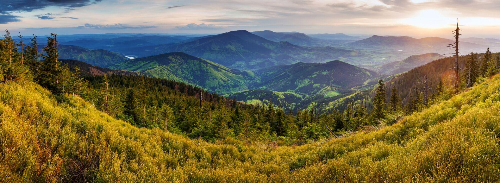

INSPIRACE NA CESTY
Absolvovaných výletů
Nachozených kilometrů
Vysněných destinací
Plány, výbava a oblíbená místa na jednom místě.
Každý výlet začíná snem o novém místě. Mezi moje další turistické cíle patří:
Dobrá příprava a správná výbava jsou základem každého bezpečného horského výletu.
Nejraději objevuji horskou přírodu a místa s krásnými výhledy.